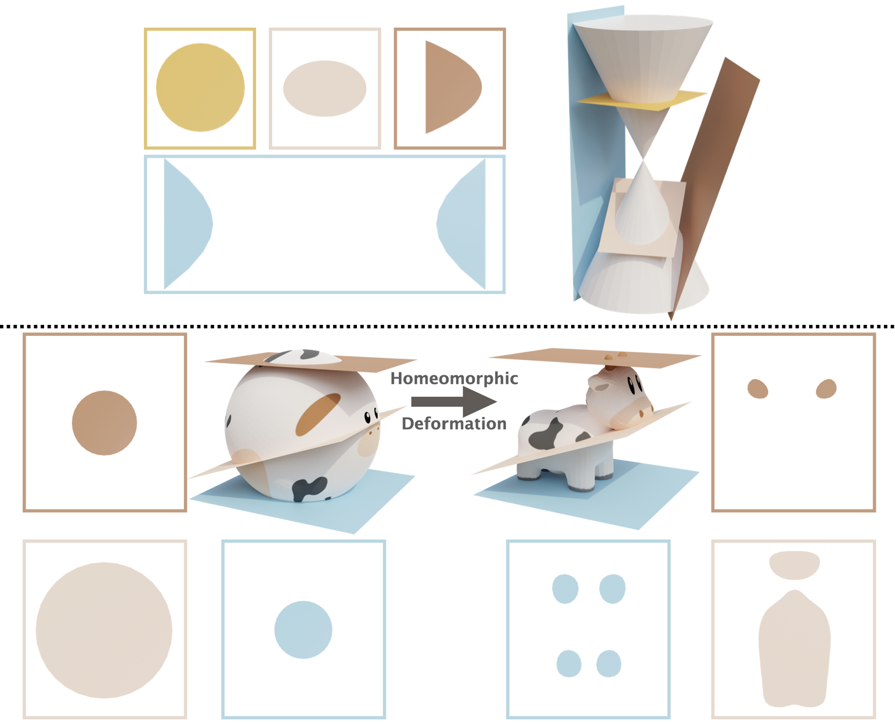
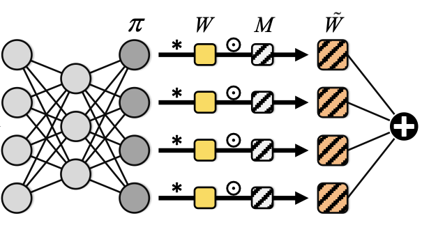

|
Chenbo Jiang
I am currently a research intern in Insitute of Computing Technology, Chinese Academy of Science and a obtained B.Eng degree in Nanjing University of Science and Technology Zijin College 2023 June.
I am looking for PhD positions in 2024 Fall.
Email /
CV
|
|
|
Research and Publications
|
|

|
NeuralSlice: Neural 3D Triangle Mesh Reconstruction via Slicing 4D Tetrahedral Meshes
Chenbo Jiang,
Jie Yang,
Shwai He,
Yu-Kun Lai,
Lin Gao
ICML, 2023
project page
/ paper
NeuralSlice is a novel approach to representing 3D shapes with flexible topology in a pure explicit fashion, which represents a 3D shape as the intersection of a 4D deformable tetrahedral mesh and a learnable 4D hyperplane.
|
|

|
SD-Conv: Towards the Parameter-Efficiency of Dynamic Convolution
Shwai He,
Chenbo Jiang,
Daize Dong,
Liang Ding,
WACV, 2023
arXiv
Sparse Dynamic Convolution (SD-Conv) naturally integrate sparse convolution and dynamic convolution such that it can inherit the advantage of dynamic mechanism and sparsity.
|
You've probably seen this website template before, thanks to Jon Barron.
Last updated Sep 2023.
|
|
{kind=link}